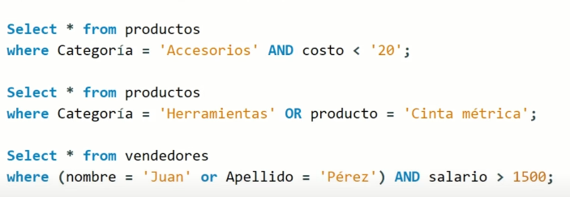

Consultas Básicas en SQL
Las consultas en bases de datos permiten recuperar, insertar, actualizar y eliminar datos de una manera eficiente.
SELECT - Consultar Datos
El comando SELECT se usa para obtener información de una tabla.
SELECT * FROM Clientes;Para seleccionar columnas específicas:
SELECT Nombre, Email FROM Clientes;INSERT - Agregar Datos
Para insertar un nuevo registro en la tabla:
INSERT INTO Clientes (ID, Nombre, Email)
VALUES (1, 'Juan Pérez', 'juan@example.com');UPDATE - Modificar Datos
Para actualizar un dato en la tabla:
UPDATE Clientes
SET Email = 'nuevoemail@example.com'
WHERE ID = 1;DELETE - Eliminar Datos
Para eliminar un registro de la tabla:
DELETE FROM Clientes WHERE ID = 1;